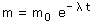
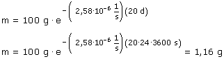

d) Ecuación de desintegración en función de la masa:   Vamos a justificar el resultado: Cada 3.11 días que pasan, la cantidad de sustancia radiactiva se reduce a la mitad, por tanto la cantidad de sustancia restante será: 100 (0 d), 50 (3.11 d), 25 (6.22 d), 12.5 (9.33 d), 6.25
(12.44 d), 3.125 (15,55 d), De acuerdo con esto, en 20 días quedará menos de 1.56 g y más de 0.781 g |